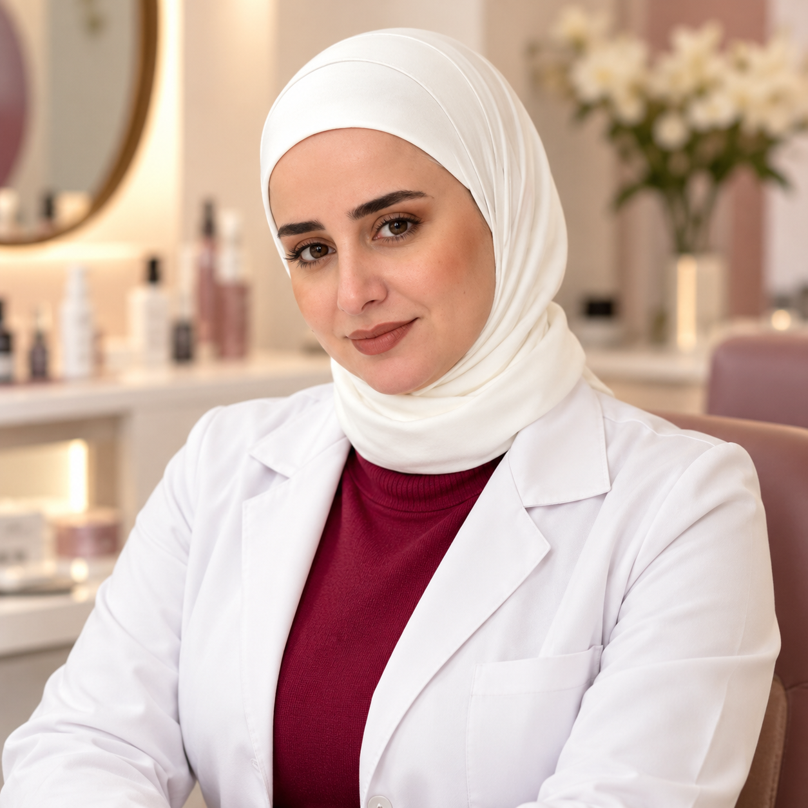
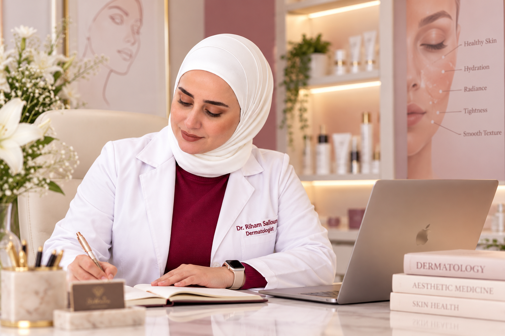
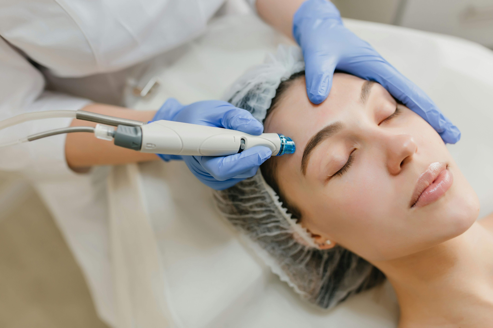
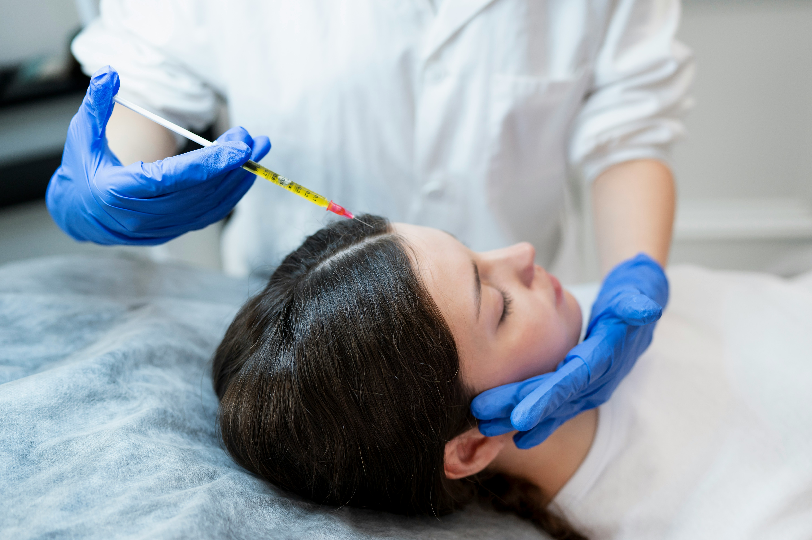
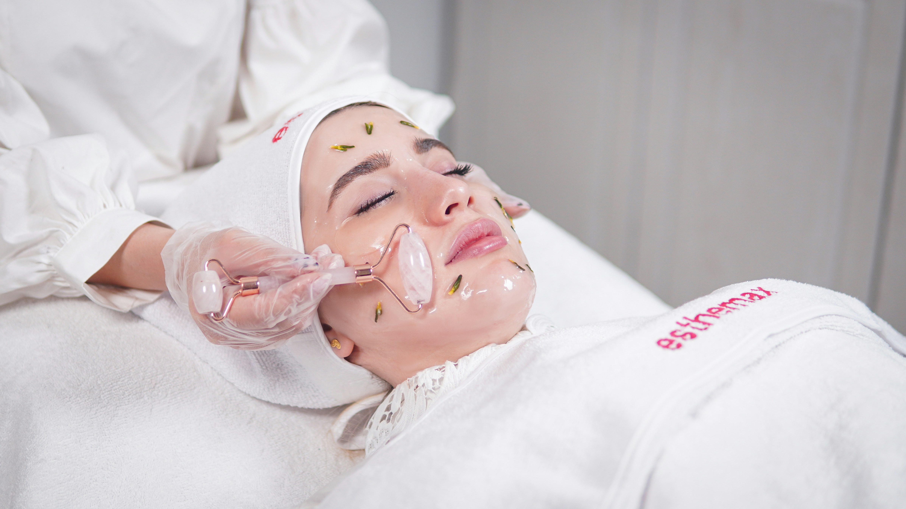
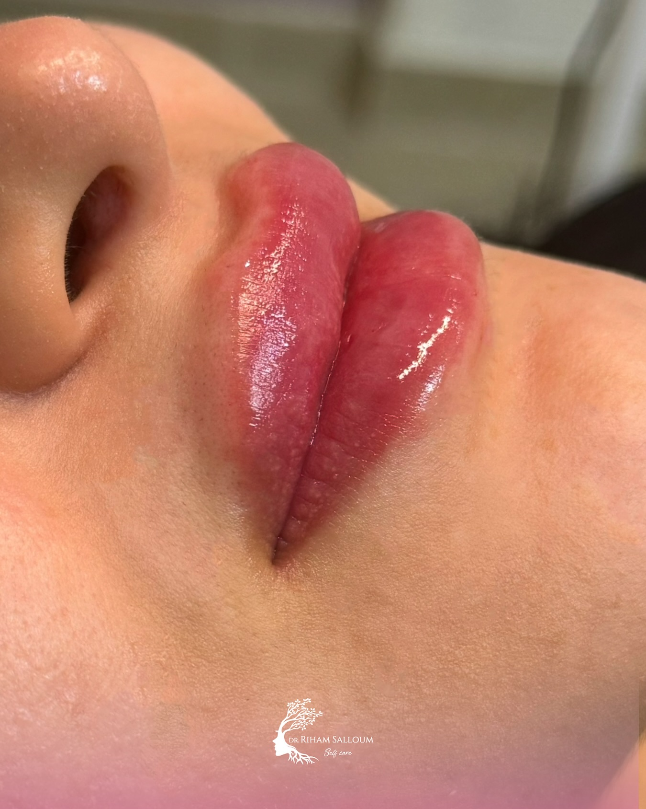

DERMATOLOGY
علاجات البشرة
تقييم مشكلات البشرة وخيارات العناية المناسبة بحسب الحالة.
استفسري عن الخدمة ←DERMATOLOGY • AESTHETIC MEDICINE
رعاية جلدية وتجميلية تجمع بين المعرفة العلمية والاهتمام بالتفاصيل وخطة تناسب احتياجات بشرتكِ.

خدمات العيادة
تبدأ الخطوة الأولى باستشارة واضحة لتقييم الحالة ومناقشة الخيارات المتاحة.
تقييم مشكلات البشرة وخيارات العناية المناسبة بحسب الحالة.
استفسري عن الخدمة ←
مناقشة الإجراءات غير الجراحية والخيارات المناسبة بعد الاستشارة.
استفسري عن الخدمة ←
فهم احتياجاتكِ والإجابة عن أسئلتكِ ومناقشة الخطوات التالية.
احجزي استشارة ←
تُحدَّد ملاءمة العلاج بعد التقييم الطبي، وقد تختلف النتائج من حالة لأخرى.

عن الدكتورة
تؤمن د. رهام سلوم بأن الرعاية الجيدة تبدأ بالاستماع والفهم، ثم اختيار الخطوات المناسبة لكل حالة. الهدف هو تقديم تجربة مهنية واضحة تحترم خصوصية كل مراجعة وتوقعاتها.
خلال الاستشارة، يمكنكِ مناقشة أهدافكِ ومعرفة الخيارات المتاحة وفهم الفوائد والمخاطر المحتملة قبل اتخاذ القرار.
معرض تثقيفي
صور توضيحية للعناية بالبشرة، وليست سجلاً لحالات مرضى العيادة.





تجربة العناية
شاركي أهدافكِ وأسئلتكِ خلال الاستشارة.
تعرّفي على الخيارات والتوقعات الواقعية.
ناقشي الفوائد والمخاطر والرعاية اللاحقة.
أسئلة شائعة
راسلِي العيادة عبر واتساب لتأكيد الموعد المتاح.
تساعد الاستشارة على تقييم احتياجاتكِ ومناقشة الخيارات والمخاطر.
لا يمكن ضمان نتيجة محددة؛ فالنتائج تختلف بحسب الحالة والاستجابة للعلاج.
كفرسوسة، دمشق، سوريا. تواصلي لتأكيد تفاصيل الموقع والموعد.
الخطوة الأولى تبدأ هنا
تواصلي مع العيادة للاستفسار عن الخدمات والمواعيد.
⌖ كفرسوسة، دمشق، سوريا
☎ 0998383983
◷ يرجى التواصل لتأكيد المواعيد